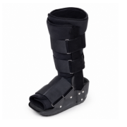

Productos de Ortopedia
Información general sobre las líneas más habituales en ortopedia y apoyo a la movilidad.

Bota walker fija Prim S.A
- Talla Surtida: S, M, L y XL
- Suela de balancín antideslizante que facilita la marcha.
- 4 correas de fijación (2 en pierna, 2 en pie).
- Cierre frontal de velcro y cincha larga de ajuste.
35.09€precio con I.V.A

Calzado Dian1805-LM
- Tallas de 34 - 45
- Altamente transpirable con gran capacidad de absorción de humedad y rápido secado
33.95€precio con I.V.A

Zuecos Sanitarios Asana
- Colores: Blanco, Celeste y Blanco con Pistacho
- Impermeables y antideslizantes.
- Tallas de 36 - 42
19.85€precio con I.V.A

Zapato Post Quirúrgico con Apertura Total
- Uso ideal para pies inflamados o vendados tras una operación
- Suela rígida que estabiliza el pie | Talón reforzado
- Tallas de 35 - 46
18.00€precio con I.V.A

Faja sacrolumbar semirrígida Primspine
- Cuenta con 4 ballenas no removibles que proporcionan soporte y rigidez en la zona lumbo-sacra.
- Dispone de cierre anterior con velcro sobre velour para facilitar la colocación y el ajuste.
- Tallas: XS, S, M, L, XL Y XLL
24.00€precio con I.V.A

Prim Fisioprim Guantes Artrosis
- Su tejido elástico y el dióxido de titanio incorporado ofrecen una sensación de soporte uniforme.
- Mejorando la movilidad diaria.
- Tallas XS=6.5cm S=8cm M=9cm L=10cm
19.85€precio con I.V.A

Silla de Ruedas BREEZY 90 Ruedas PequeñaS
- PLEGADO SENCILLO: permite ser plegada cómodamente, muy útil para almacenarla o transportarla de un lugar a otro.
- RESISTENTE: su estructura de acero hacen de esta silla una silla muy robusta.
- REPOSABRAZOS Y REPOSAPIÉS ABATIBLES: facilitan las transferencias a la silla.
165.00€precio con I.V.A

Sunrise Medical Silla de Ruedas Breezy Premium de 40 cm y 24 pulgadas
- diseñada al detalle para ampliar su duración. Es resistente, firme, ergonómica y proporciona una óptima seguridad y comodidad.
206.00€precio con I.V.A

Silla de aseo con inodoro y ruedas
- Profundidad de la silla: 44 cm
- Altura respaldo: 35 cm
- Ancho de la silla: 43 cm
- Alto hasta el asiento: 53 cm
- Alto total: 87 cm
- Ancho total: 67 cm
- Peso: 11 kg
101.00€precio con I.V.A

Silla de Ducha y WC ETAC CLEAN
- Número de Ruedas con freno: 2 a 4
- Ancho del Asiento: 49cm y 55cm
- Color: Blanco y Verde
272.00€precio con I.V.A

Kit antiescaras PIUMA UP con colchón y compresor con ajuste
- Fuente de alimentación: 220V / 50-60 Hz
- Presión de salida: 40-100 mmHg
- Cable de alimentación: 2 m
- Salida de aire: 6-7 LPM
- Tiempo de ciclo: 6 min.
- Dimensiones: L:260 x D:130 x H:100 mm
- Peso: 1,6 kg
- Dimensiones sin solapas infladas: L:1950 x D:880 x H:76 mm
28.00€precio con I.V.A

VITALIFT
- Sistema compuesto de cama VITA con carro elevador.
- Dimensiones: 90 x 190 cm
- Dimensiones exteriores con cabecero, piecero y barandillas: 102 x 195 cm.
- Ángulos de articulación aproximados: tronco 70º / muslos 43º / piernas -12º.
- Peso máximo de usuario: 135 kg.
- Peso máximo admisible: 180 kg.
- Rango de elevación de 36-76 cm de altura.
- Cumplimiento normativa IEC 60601-2-52.
880.00€precio con I.V.A. Entrega a domicilio. Se cobran portes. También realizamos la instalación y retiramos el aparato antiguo.

Holdy RS972-30
- Largo: 30cm
- Grosor: 3.6cm
9.00€precio sin I.V.A

Sillas de ruedas de posicionamiento Invacare Action 3 NG Comfort
- Anchura asiento: 40.5 / 43 / 45.5 / 50.5 cm
- Profundidad asiento: 45 cm
- Ángulo de asiento: 0° - 30°
- Altura de asiento: 53* / 50* / 48* cm
- Altura del respaldo: 56 cm
- Longitud reposapiés: 37 - 49 cm
- Peso máx. usuario: 125 kg
- Peso total: 26.5 kg
Con receta DEL SERVEI CATALA DEL SALUT

Trapecio de potencia desmontable
- Peso: 11 Kg
- Soporta 90 Kg
- Alto: 170 cm
- Ancho entre patas: 82 cm
- Fondo entre patas 75cm

Barandillas abatibles 3 BARRAS
- Largo: 148 cm
- Alto: 40 cm
- medida de anclaje: 42 x 85 mm

Mesita doble tablero
- Mesita Fija: 20 x 38 cm
- Mesa Basculante: 60 x 38 cm
- Alta Regulable: 70-110 cm
- Altura Patas: 8,5 cm
- Fondo entre patas 75cm

Silla de ruedas de posicionamiento Rea Clematis Pro
- Anchura asiento: 39 /44 /49 cm
- Profundidad asiento: 420-480 mm
- Ángulo de asiento: 0° - 25°
- Altura de asiento:400-450 (Ruedas 24")
- Altura del respaldo: 57-71 cm
- Longitud reposapiés: 35 - 46 cm
- Peso máx. usuario: 135 kg
- Peso total: 30 kg

Ortesis craneal Helios
- Ajuste personalizado y específico.
- Mayor eficacia entre los 4 y 12 meses de edad.
- Ortesis craneal dinámica y progresiva.
Confeccion a medida

SOLMATS GB20: GRÚA BIPEDESTACIÓN PLEGABLE
- Peso maximo: 150 Kg
- Largo general: 88.1 cm
- Ancho general: 58.5 cm
BIPEDESTACIÓN

SOLMATS VILTA 200KG: GRÚA BIPE/SEDESTACIÓN
- Peso maximo: 150 Kg
- Diseño ergonómico y compacto
- Plegable para transporte
- Percha con múltiples regulaciones
- Reposapiés y soporte de piernas extraíble
MIXTAS

SOMATS SDN: GRUA DE SEDESTACIÓN
- Peso maximo: 150 Kg
- Ancho total: 60 cm
- Ruedas delantaras dobles: 75mm
SEDESTACIÓN

Triciclo eléctrico de 3 ruedas City Coco HM-3
- Velocidad máx: 45 km/h
- Carga maxima: 200Kg
- Largo: 204 cm
- Ancho: 107 cm
- Altura del maniyar: 28 cm
- Pendiente máx: 40%